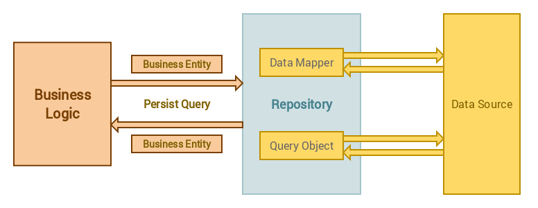

MoClippings #7 在溝通的過程中，就把事情做完，似乎是個趨勢
發刊日 : 2016/04/25 - 2016/05/08
資訊知事
- 企業IM
- 企業微信
- 1.微信企业号和企业微信不冲突。
- 2.可选“回执”方便办公。
- 3.企业微信增加“休息”功能。
- 4.企业微信是免费的。
- 新聞：企业微信1.0版正式发布，老板喊你来微信打卡、请假啦
- 在移动OA功能方面，结合了公告、考勤、请假、报销等功能。企业微信团队表示，下一阶段会着重于API接口的开放。
- 阿里釘釘
- 企業微信
阻擋 PIXNET 的三分鐘閒置視窗 - 妳也討厭 PIXNET 也開始那很礙眼的蓋台廣告嘛？可以透過文中的方法做排除唷！
- uBlock - github
- uBlock Chrome Extension
- Firefox Add-ons
相對購買力指標 - 購買力平價（英語：Purchasing Power Parity，縮寫PPP），又稱相對購買力指標，是一種根據各國不同的價格水準計算出來的貨幣之間的等值係數，使我們能夠在經濟學上對各國的國內生產總值進行合理比較，這種理論匯率與實際匯率可能有很大的差距。
ThinkPower University 昕力大學 - 透過 ThinkPower 公司內 100 位技術同仁無私分享，將工作中所學習到的專案經驗、新技術研究心得、從錯誤中學到的寶貴經驗以及其他相關的技術知識，都發佈在這裡，希望能跟大家一起討論交流，一起成長。
[圖解] Apple Pay 中的 Token 到底是什麼？Visa 用一張圖告訴你
- Visa不知曉刷卡者身份，沒有個資疑慮
- Visa Token服務「免費」，不增加金融業者成本
- 伺服器地點不影響效率，Visa不會為台灣建伺服器
- 政府不該管制，Apple與Google等科技業者應有最終選擇權
專案管理
技術知事
開發心法
- http://www.techtalk.tw/ - 討論 Java, 程式語言, 軟體工程以及其他科技相關議題的中文 Podcast
SOFT & SHARE - 告訴我, 我會忘記; 教導我, 我只是記得; 讓我深入其中, 我便學會. – 另外一個致力於技術分享、閱讀、討論的社團。
來聊聊 PHP & JavaScript & CSS 的 Coding Style - 關於 PHP 及 JavaScript 的 Coding Style 描述的簡報，值得開始接觸的人閱讀。
大神工程師教你怎麼練就「coding 速度快、bug 數量少」的境界
12for(;;)practics();如果你在最初編寫程式時沒有註意可重用性，不要欺騙自己相信程式可以很神奇地被重用。相反，應該從一種情形著手，保持程式的具體性。如果值得修改程式讓它一般化，那麼應該做好徹底重寫的準備。
Git Flow 與團隊合作 - 關於 Git 在團隊合作開發時的對策及方案。
PHP Roundtable - 很多 PHP 基礎概念的 podcast
DevOps
- Docker 基礎介紹與實戰
- Slide - Docker 基礎介紹與實戰
PHP Library or 工具
Prestissimo (composer plugin) - 這個 composer plugin (以 global 安裝)，可以幫忙以平行安裝做下載的時間。
LaraDock - Like Laravel Homstead but for Docker instead of Vagrant. 把 Laravel 的 Homestead 做成 Docker 的專案。
Using Repository Pattern in Laravel 5
- 
- Repository pattern separates the data access logic and maps it to the business entities in the business logic. Communication between the data access logic and the business logic is done through interfaces.
- Implement I5-Repository
flywaydb - Evolve your Database Schema easily and reliably across all your instances. 資料庫的版本控制工具。支援了非常多的資料庫管理系統。
手把手编写自己的 PHP MVC 框架实例教程 - 很輕量簡易的MVC結構，對於初學 MVC 的人可以細看瞭解。
LINE BOT SDK - PHP - 官方的 LINE BOT SDK for PHP
Static site & blog generator 靜態網站網頁產生工具
- katana
- Laravel
- Blade
- Jigsaw
- Laravel
- Blade
- Sculpin
- PHP
- Twig
- 各個靜態頁面產生的總評比網站 Top Open-Source Static Site Generators
- katana
前端網頁開發工具
第一次用 Vue.js 就愛上 - 關於 Vue.js 的入門初學簡報，由 Kuro 所撰寫。
FullCalendar - A JavaScript event calendar. Customizable and open source. 一個以 JavaScript 完成的月曆系統。
- Scheduler - A premium add-on for displaying events and resources.